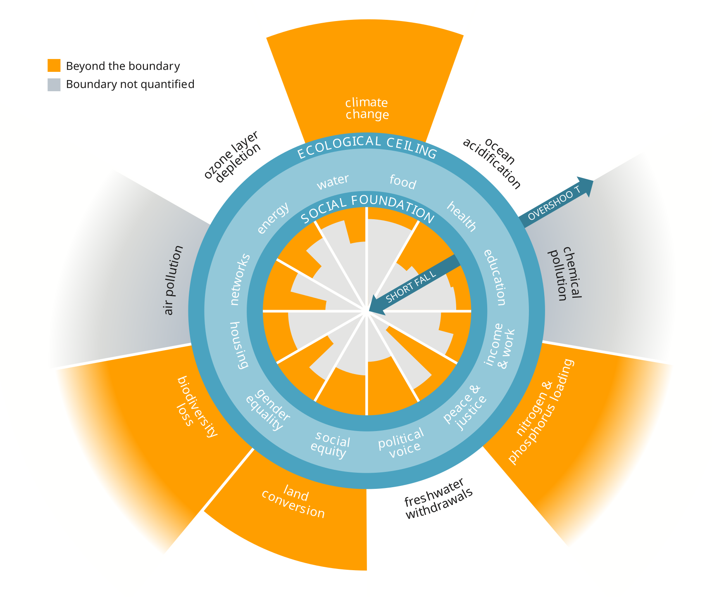
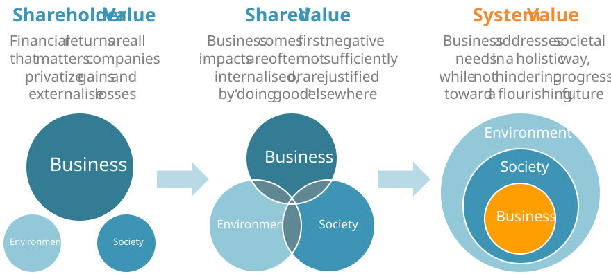
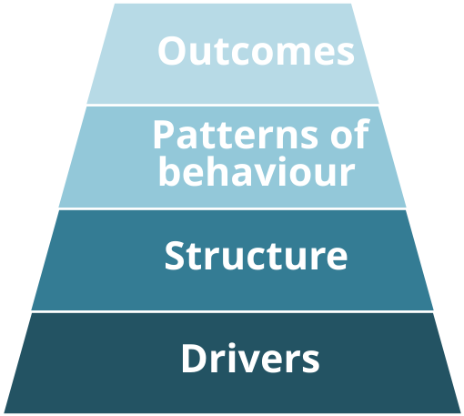
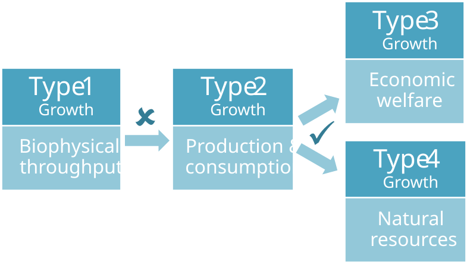

3. Where we are today: a systems view
Peter Senge
3.1 Why systems thinking is critical
250 years ago, there were less than a billion people on Earth.
Back then, Earth’s resources – and its resilience in the face of our demand for them – must have seemed limitless.
So it should come as no surprise that classical economics – which dates from that period – did not consider the fact that we live in a finite, resource-constrained world. That belief set the tone for the way we have done business for generations: producing, consuming and disposing of ever more stuff, without weighing the long-term consequences.
Now there are 7.5 billion people on the planet, with 2 billion more set to join us by 2050.
Industrialization and rapid growth have taken their toll. Crop yields are suffering from ever-more extreme weather events, fuelled by climate change. Fresh water is scarce in many areas. Some natural resources that were once plentiful are now harder and costlier to obtain. Trust in institutions is falling while inequality is rising. Recognizing the extent of these crises (Figure 3.1), world governments came together in 2015 to launch the UN Sustainable Development Goals (SDGs): a call to action for everyone from nation states to corporations (Figure 3.2).
Our economic system is broken.
Put simply, our economic system is failing to meet the needs of hundreds of millions of people around the world. Furthermore, the way we do business is degrading the planetary services upon which we as a species depend: clean air, fresh water, rich biodiversity, climate stability, access to materials, and so on.
A systemic response is needed.
The so-called Triple Bottom Line [1] of People, Planet and Profit has never been more relevant. But we need to take a fresh look at what this really means. The global challenges we face are hugely complex and interdependent. In short, they are systemic – and to tackle them we must take a systems-based approach.
Figure 3.1: This “Doughnut” represents the safe operating space for humanity: a social foundation of wellbeing that no one should fall below, and an ecological ceiling of planetary pressure that we should not go beyond. Source: Doughnut Economics. [2]

Business can thrive only if society and nature also thrive.
Business can only thrive in a strong society. Society, in turn, can only prosper if its needs are being met by a healthy natural environment. These relationships, best described as nested dependencies, are key to understanding how our global economy operates.
We must embrace these systemic interdependencies if we are to identify exactly how – and how much – we must change the way we do business. Only then will we be able to achieve the SDGs and set ourselves on a path to a Future‑Fit Society: one which is socially just, economically inclusive, and environmentally restorative.
The task ahead is enormous.
Our economic system is intrinsically flawed and taking us in the wrong direction, fast. No amount of tinkering around the edges will fix that.
We must instead equip and encourage all economic actors to pursue rapid and radical change in a coordinated way. And that demands a fundamental rethink of what it means to create value in the 21st Century. So that’s where we will start.
Figure 3.2: The UN Sustainable Development Goals.
| Sustainable Development Goal | |
|---|---|
 |
No Poverty End poverty in all its forms everywhere. |
 |
Zero Hunger End hunger, achieve food security and improved nutrition, and promote sustainable agriculture. |
 |
Good Health and Well-being Ensure healthy lives and promote well-being for all at all ages. |
| Quality Education Ensure inclusive and equitable quality education and promote lifelong learning opportunities for all. |
|
 |
Gender Equality Achieve gender equality and empower all women and girls. |
 |
Clean Water and Sanitation Ensure availability and sustainable management of water and sanitation for all. |
 |
Affordable and Clean Energy Ensure access to affordable, reliable, sustainable and modern energy for all. |
 |
Decent Work and Economic Growth Promote sustained, inclusive and sustainable economic growth, full and productive employment and decent work for all. |
 |
Industry, Innovation and Infrastructure Build resilient infrastructure, promote inclusive and sustainable industrialization, and foster innovation. |
 |
Reduced Inequalities Reduce inequality within and among countries. |
 |
Sustainable Cities and Communities Make cities and human settlements inclusive, safe, resilient and sustainable. |
 |
Responsible Consumption and Production Ensure sustainable consumption and production patterns. |
 |
Climate Action Take urgent action to combat climate change and its impacts. |
 |
Life Below Water Conserve and sustainably use the oceans, seas and marine resources for sustainable development. |
 |
Life On Land Protect, restore and promote sustainable use of terrestrial ecosystems, sustainably manage forests, combat desertification, and halt and reverse land degradation and halt biodiversity loss. |
 |
Peace, Justice and Strong Institutions Promote peaceful and inclusive societies for sustainable development, provide access to justice for all and build effective, accountable and inclusive institutions at all levels. |
| Partnerships for the Goals Strengthen the means of implementation and revitalize the global partnership for sustainable development. |
3.2 A systems view of value creation
We all know we need to act.
Left unchecked, today’s global challenges put in jeopardy Earth’s natural processes, our social fabric, and economic activity as a whole. This creates a huge moral imperative for collective action.
A growing number of business leaders know they must rethink things. Investors, too, are starting to realize their portfolios are exposed to risks which they are ill-equipped to predict. So what’s stopping the business world from mobilizing its considerable resources to deliver rapid and radical change?
There is no single answer. CEOs and boards often feel compelled to focus on short-term gains, not long-term value. Many investors struggle to see beyond the next quarter’s results. Governments have been slow to adapt incentives and regulations to respond to global challenges. And with so many serious issues competing for a company’s attention it can be difficult to zero in on what really matters.
All these factors are symptomatic of a bigger problem within our economic system: a myopic notion of what value creation means, which fails to recognize and reward the true game-changers.
To understand the full extent of a company’s impacts – good and bad – we must think in terms of Creating System Value.
No business decision is ever free of potential trade-offs. But a systems-based approach makes it possible to identify otherwise unforeseen issues. This allows negative trade-offs to be anticipated, avoided, or at the very least addressed.
This kind of holistic decision-making must become the norm if we are to avoid – and eventually reverse – damage to our natural systems and social fabric. This is what we mean by Creating System Value (Figure 3.3).
The Future-Fit Business Benchmark was developed specifically to help companies put this concept into practice. The first step in this development was to examine the systems contexts shaping business today.
Figure 3.3: Rethinking value creation through a systems lens.

3.3 A systems view of the world
What is a system?
A system can be defined as a set of interrelated and interdependent parts that operate collectively in pursuit of some common purpose. [6]
The purpose of a system may not always be obvious. What a system actually does may not be what was originally intended, or what people assume that it does. Hence, to avoid any confusion relating to the differences between actual and intended behaviour, systems scientists typically frame the purpose of a system simply as “what it does”. [7]
How do systems operate?
Every system operates within a broader context, because its existence both depends upon and can affect other systems around it.
To fulfil its purpose, a system transforms one or more inputs into outputs. To understand how this happens, we can think of a system in terms of four levels, each one influencing the next:1
- Drivers: Forces on the system that arise from the broader context, which both influence what it can do and combine to shape its purpose.
- Structure: The physical parts of the system and how they are organized so that they can perform the processes needed to acquire inputs and transform them into outputs.
- Patterns of behaviour: How the system acts over time. Such patterns are often emergent: they result from how the parts of the system interact, and so they can’t be predicted by observing each part in isolation.
- Outcomes: The changes – to both the system itself and others around it – which arise from its existence. This includes the effects (intended and otherwise) of consuming inputs and producing outputs.
These four system levels are often visualized as successive layers of an iceberg, with Drivers at the bottom. That’s because in real-world systems, often only the top level – Outcomes – is readily visible (see Figure 3.4).
We will return to this model later, to help us identify a comprehensive set of desirable and measurable outcomes that a Future‑Fit Society will deliver.
Figure 3.4: The iceberg system model.

But first we must consider the world in terms of an interconnected network of systems.
What are natural systems?
A natural system is one that exists in nature, independent of any human involvement. [8] At the highest level, the Earth comprises four interdependent natural systems: the atmosphere, the lithosphere, the hydrosphere and the biosphere. [9]
The biosphere – which encompasses all living matter – can further be described in terms of a huge and diverse range of ecosystems. All living organisms are themselves systems. For simplicity, from this point on we often refer to this web of natural systems as the environment.
3.4 The environmental context
Earth fulfils three critical ecosystem functions for society.
First, Earth maintains critical life-support systems.
All life relies on natural processes that evolved over millions of years. Among other things, these processes regulate air and water quality and the climate, enable crops to grow, provide storm protection and maintain biodiversity.
Second, Earth provides our raw materials and energy.
Apart from our “solar income” (energy from sunlight) all of our resources come from the Earth. Many natural resources, such as fish and trees, are renewed over time, thanks to the aforementioned life-support systems. But if we use too much, too quickly (e.g. deforestation, over-fishing), we undermine nature’s capacity to regenerate them.
Minerals extracted from the Earth’s crust are finite resources. Once used, some are gone for good (e.g. fossil fuels). Others (e.g. metals) could in theory remain in use forever if we recover them after use.
Third, Earth assimilates waste.
Waste is a characteristic unique to human systems: in nature, all matter (dead plants, animals) is absorbed and digested by other organisms.
Two types of waste are causing big problems. The first type is human-made substances that don’t exist naturally, so nature hasn’t evolved ways to break them down harmlessly (e.g. plastics, CFCs). The second type comprises substances that do exist in nature, but which we emit in quantities or in ways that upset the natural equilibrium (e.g. carbon dioxide in the air, nitrogen compounds in the oceans).
Both types of waste can affect the environment chemically or physically, for example by introducing toxins into food-chains, or by trapping heat in the atmosphere. In so doing, they disrupt the life-support systems we rely upon.
3.5 The societal context
Inclusivity, resilience and trust are crucial to society’s success.
Everyone should have the capacity and opportunity to lead a fulfilling life.2
Given that billions of people are living in some form of poverty, it should be clear that our economy is not fit for purpose.
Any social system’s ability to thrive, right up to society as a whole, relies to a great extent on the wellbeing of the people that contribute to it. This does not mean that people must be happy all the time. Rather, it means that everyone should be able to meet their basic needs (e.g. food, shelter) and pursue higher needs (e.g. a sense of meaning, creativity).3
Both aspects are essential. A focus on basic needs alone may enable people to survive, but not to thrive and grow. Equally, people can only pursue higher needs if their basic needs are met.
To meet basic needs and pursue higher needs, people require three things:
- The physical capacity to do so (including physical/mental health);
- The mental capacity to do so (including relevant skills and competences);
- The opportunity to do so (via social justice, economic inclusion, and trusted relationships).
Some basic needs are so crucial to people’s wellbeing that access to them is considered a fundamental human right (see Figure 3.6). [2] [13]
Trust serves as society’s glue.
Trust is associated with low levels of corruption, democratic stability, and relative economic equality. Greater equality correlates with a reduction in many societal ills (e.g. suicide, drug abuse, obesity, violence). [15]
Society is huge and complex. Trust is essential because everything works only by coordinating action and devolving responsibility. But there is no shortcut to trust: to gain it, one must first be perceived as trustworthy.
3.6 The economic context
What can a systems approach tell us about ‘growth’ and ‘value’?
Can – and should – economic growth continue?
Ask politicians, investors or CEOs if growth is ‘good’ and their yes will likely be as emphatic as the no one might hear from concerned environmentalists.
The reason for such polarization is not that one respondent cares about society while the other doesn’t, but rather that they have different perspectives on what growth actually means. To reconcile these perspectives, we need to look at growth through a system lens.
There are four types of economic growth.
From a systems perspective, there are four types of economic growth: [16]
- Type 1 – Growth in biophysical throughput: This is the amount of raw materials we take out of (and waste we put back into) the environment. On a finite world, indefinite growth of this type is not possible.
- Type 2 – Growth in production and consumption: This is the amount of goods and services flowing through society, which is roughly what Gross Domestic Product (GDP) measures. This kind of growth isn’t intrinsically bad. For example, as the population grows, more food will have to be produced and consumed.
- Type 3 – Growth in economic welfare: This represents people’s capacity and opportunity to lead a fulfilling life – and in particular the degree to which their basic needs are met (Figure 3.6). There is a strong relationship between this type of growth and type 2 – but it is not a simple one.
- Type 4 – Growth in natural resources: This is concerned with the amount of biomass (fish, wood, etc.) which regenerates through natural processes such as photosynthesis, and the health of the ecosystem functions (fresh water, fertile soil, etc.) which enable that regeneration. This type of growth increases the raw materials available for our consumption, and enriches the natural systems we depend upon.
Growth of types 3 and 4 is unequivocally ‘good’, since it can contribute directly to solving many of the global challenges mentioned earlier, from social inequality to food security. Given that we’re placing far too great a demand on Earth’s natural systems, type 1 growth is a problem (see Figure 3.7).
As for type 2, growth in production may make things worse (e.g. by causing ecosystem destruction), and excess consumption can be just as problematic (e.g. when single-use products result in large volumes of unrecyclable waste).
Our pursuit of growth is flawed.
Today the global economy focuses almost exclusively on type 2 growth, production and consumption, regardless of how (and how much) it is linked to the other three types. Why? Because money changes hands when goods and services are bought and sold – and our economic system has evolved to treat financial returns and value creation as one and the same thing.
Figure 3.7: From a systems perspective there are four types of economic growth.

To understand why, we can use the iceberg model introduced earlier (see Figure 3.4). The pursuit of GDP is a key driver of our economy, because every major nation on Earth has sought to maximize this metric since just after the second world war. [17] This has shaped the structures and patterns of behaviour that social systems exhibit today.
One way this manifests is in how much effort central banks and governments expend in trying to ‘grow the economy’ by tweaking interest rates and other factors at their disposal, constantly trying to adjust borrowing and spending patterns in pursuit of never-ending growth. Another is when companies seek out the cheapest legally-acceptable route to getting something done. If that route results in generating waste, over-harvesting raw materials, using creative approaches to pay less tax, or outsourcing work to regions with less progressive labour standards, so be it.
Such negative impacts occur not because the people making the decisions are blind to social and environmental concerns, but because the economic context within which they are operating is not adequately driving the right kinds of outcome.
Bibliography
There are many ways to describe how systems operate. This section draws extensively on Donella Meadows’ characterization of a system, from her 2009 book, Thinking in Systems: A Primer. [6]↩︎
This understanding of wellbeing is aligned with The Capability Approach pioneered by Economist and Philosopher Amartya Sen. The emphasis here is not on maximizing subjective wellbeing, but on ensuring people have the capability to achieve the kind of lives they deem to be valuable. [11]↩︎
This distinction between basic and higher needs is informed by Maslow’s Hierarchy of Needs. [12]↩︎
Social systems in this context.
Today’s social systems are profoundly affecting all three ecosystem functions.
No social system can survive without energy, fresh water, and a wide range of goods derived from natural resources, all of which have to be mined, farmed or harvested from the wild. Such resources are obtained and transformed in a wide variety of ways, but almost all value chains follow a linear take-make-waste approach. At every step, our methods of production and consumption typically result in unintended by-products, which are captured and treated as waste, or which escape into nature as pollution. Either way, the intrinsic value to society of the original natural resources is lost.
All social systems also have a physical presence, from fields and buildings to a wide range of supporting physical infrastructure. And our growing need for space is putting ever-more pressure on the natural world, limiting its capacity to support our needs.
Caution: Natural Capital
Planetary resources we benefit from are sometimes described as natural capital. This terminology can lead to the erroneous conclusion that we can replace nature’s services with other types of capital (e.g. financial or manufactured). But many natural resources – clean air, fertile soil – are essential to life, and have no substitutes. That said, the term natural capital can be useful, if by capital we mean an asset that is capable of generating wealth. We must not deplete natural capital, but we can live off its interest.